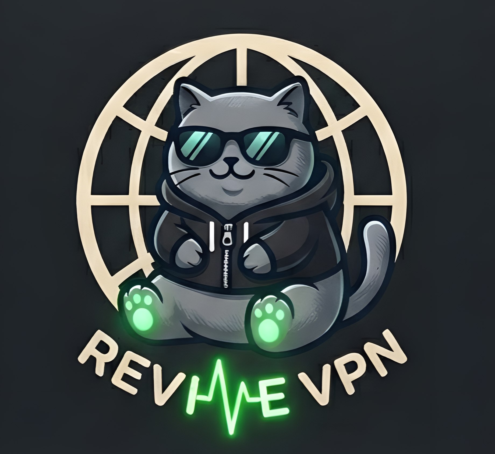

Бесплатный MTProxy — подключается в одно нажатие прямо из Telegram. Ничего ставить не надо.
MTProxy — только для Telegram. Если нужен доступ ко всему интернету — сайтам, приложениям, стримам — есть полноценный VPN.
Протокол, который придумала команда Telegram для обхода блокировок. Встроен прямо в приложение — ничего устанавливать не нужно.
Через прокси идёт только Telegram — браузер и всё остальное работает как обычно, напрямую.
Провайдер режет Telegram. Корпоративная или университетская сеть блокирует мессенджеры. Летите в страну, где Telegram ограничен.
Только зашифрованный поток данных. Сообщения, медиа, звонки — всё шифруется на вашем устройстве до отправки.
Прокси не знает, что вы пишете и кому звоните.
Да, MTProxy предоставляется бесплатно. Это наш способ помочь пользователям.
VPN шифрует весь трафик устройства, а MTProxy — только трафик самого Telegram.
Работает на всех устройствах, где установлен Telegram (iOS, Android, Windows, Mac).
Нет, весь трафик сквозной. Прокси видит только зашифрованные пакеты.
Попробуйте обновить ссылку на прокси или обратиться в поддержку.
В настройках Telegram: Настройки → Данные и память → Прокси.